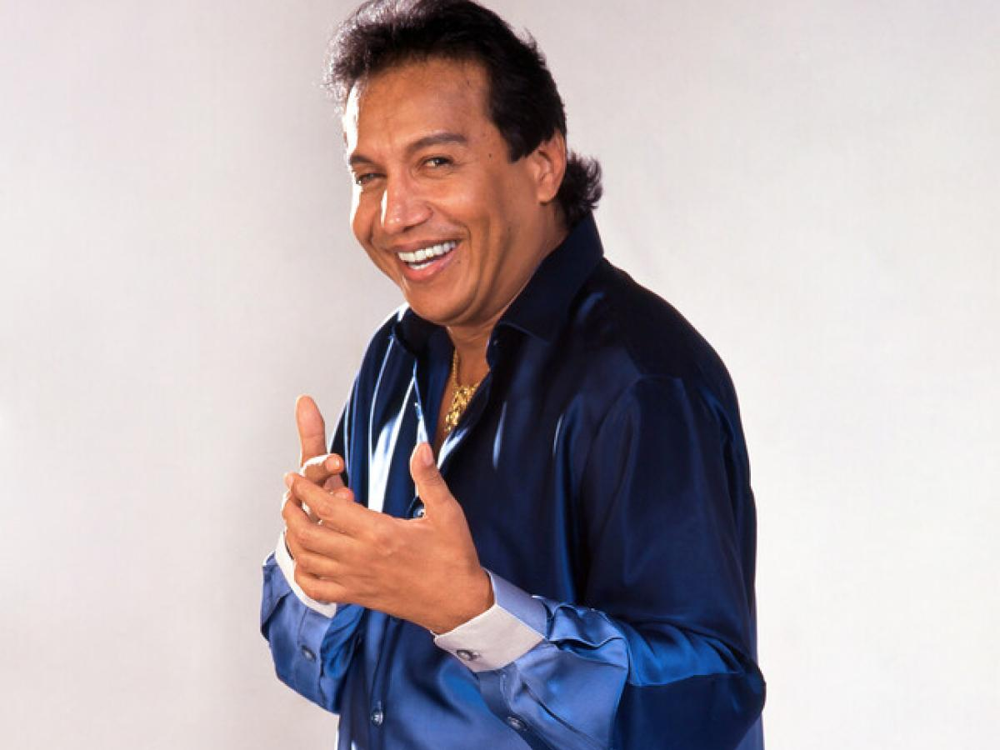
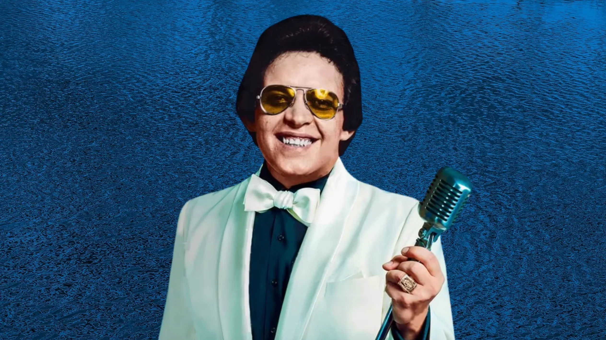
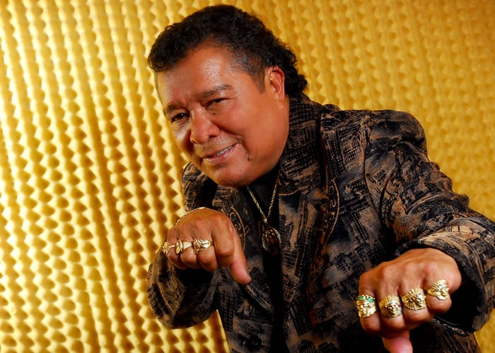
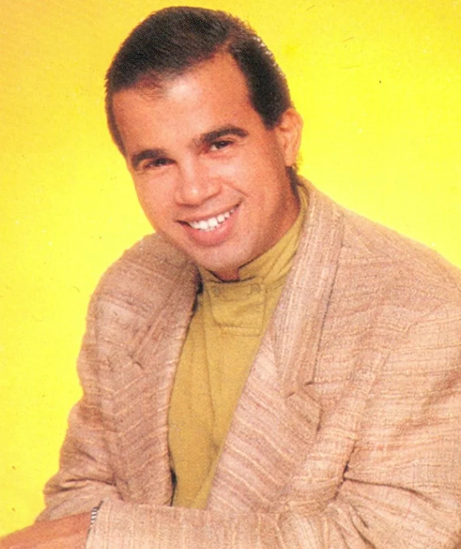
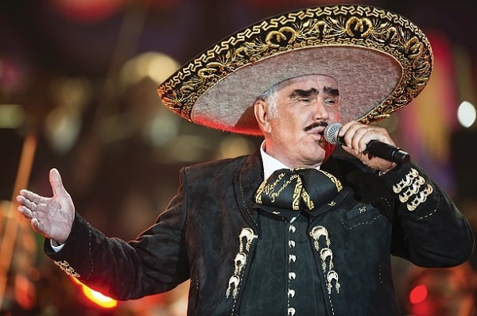

| GENEROS MUSICALES |
ARTISTA MAS RECONOCIDO |
¿QUIEN ES? |
CANCION POPULAR |
MAYOR RIVALIDAD ENTRE ARTISTAS |
PAIS ORIGEN DEL GENERO |
| VALLENATO |
 |
Diomedes Díaz
Destacado por ser un cantante y compositor de vallenato a nivel internacional. Vendiendo más de 20
millones de discos y recibiendo un Grammy en el año 2010, Diomedes Diaz es por lejos el artista
vallenatero más famoso. |
El cantor de Fonseca - Carlos Vives |
La rivalidad entre Rafael Orozco y Diomedes Díaz fue una de las más intensas y recordadas en la
historia de la música vallenata. Ambos artistas se esforzaron por superar al otro en popularidad y
calidad musical, y su rivalidad marcó un hito en la historia de este género musical. A pesar de su
rivalidad, ambos artistas siguen siendo recordados como dos de los más grandes exponentes del vallenato.
|
El vallenato es un género musical tradicional surgido de la fusión de expresiones culturales del norte
de Colombia |
| SALSA |
 |
Héctor Juan Pérez Martínez; conocido artísticamente como Héctor Lavoe, fue un cantautor y productor
musical puertorriqueño de salsa. Es una de las más grandes figuras de la salsa y ayudó a establecer la
popularidad de dicho género a nivel mundial en las décadas de los sesenta, setenta, ochenta, y comienzos
de los noventa |
Dia de mi suerte - Hector Lavoe |
Tito fuentes y Tito Rodriguez; la rivalidad artística de aquella época quedó demostrada cuando entre los
Tito se llegaron a interpretar temas reconocidos por ir de uno para el otro. Esta es una historia más de
las interesantes rivalidades artísticas ,que en buena forma incentivó la competencia y el espectáculo
para la gente. |
Aunque sus raíces son principalmente de Cuba, la salsa como baile se originó en el barrio español de
Nueva York, el “Spanish Harlem”, donde se asentaba la principal colonia de latinoamericanos en la
ciudad. Desde ahí comenzó a expandirse y abrirse paso en otras ciudades dentro y fuera de Estados
Unidos. |
| MERENGUE |
|
Sergio Pascual Vargas Parra, es un político y cantante dominicano de merengue y bolero, quien fue muy
popular en las décadas de los 80's y 90's, durante la "época de oro del merengue" y hoy se mantiene,
activo, como uno de los referentes del merengue dominicano |
Suavemnete - Elvis Crespo |
Wilfrido Vargas y Jhonny Ventura dos merengueros dominicanos que han mantenido por más de 40 años una
rivalidad honesta y sincera, son dos personajes emblemáticos del género musical merengue que han logrado
marcar una diferencia en la música. |
El merengue es un género musical caribeño que se originó a mediados del siglo XIX en República
Dominicana y ha trascendido fronteras pues aunque es bailado en todo el Continente Americano, también es
popular en distintas partes de Europa. |
| REGGAETON |
 |
William Omar Landrón Rivera, más conocido por su nombre artístico Don Omar, es un cantante, compositor,
productor musical, empresario, y actor puertorriqueño. Es considerado como el «rey del reguetón»,
tanto por críticos y fanáticos de la música |
Gasolina - Daddy Yankee |
Daddy Yankee y Don Omar; en los orígenes del reguetón, ellos competían por ganarse el título del rey en
este género. Eso creó entre ellos una gran rivalidad a la que quisieron poner fin en 2008. Ese año
grabaron varias canciones juntos e, incluso, años después, hicieron una gira, The Kingdom, que lejos de
unirles, les distanció. |
Nacido en los barrios pobres de Puerto Rico, el reggaetón fue combatido en sus inicios, acusado de
corruptor y de promover el perreo, un baile considerado soez. Pero con el tiempo se ha ido expandiendo y
sofisticando hasta convertirse en un éxito mundial y en el principal producto de exportación musical de
Puerto Rico. |
| CUMBIA |
 |
José Pastor López Pineda; más conocido como Pastor López, fue un cantante y compositor venezolano,
reconocido en América por interpretar raspacanilla, cumbia y porro. Apodado como «El Indio», tuvo gran
transcendencia en la música latina, con éxitos musicales como «Golpe con golpe», «El ausente»,
«Traicionera», «Tienes que regresar», «La Colegiala», «Lloró Mi Corazón», «Las Caleñas», «Cariñito Sin
Mi», «Triste Navidad», entre otras canciones que ubicaron la cumbia colombiana en la palestra mundial.
|
El Ausente - Pastor Lopez |
Pastor Lopez y Rodoldo Aicardi; fueron los mayores exponentes de la cumbia colombiana y su rivalidad se
ve reflejada en las epocas decembrinas, pues sus grandes exitos se baten en las emisoras del pais. Sin
duda alguna enmarcaron sus exitos en la epoca del buñuelo y la natilla, pues un diciembre sin sus
canciones no seria lo mismo. |
La cumbia es un género musical y baile folclórico tradicional de la costa Caribe colombiana. Posee
elementos de tres vertientes culturales, indígena, africana y europea, siendo consecuencia del mestizaje
entre estas culturas durante la Conquista y la Colonización española. |
| TECNOMERENGUE |
 |
Jesús Miguel Moly Peréz; más conocido como Miguel Moly, es un cantautor y productor musical venezolano,
que se dio a conocer en 1990 en toda América y Europa. Su carrera inició en 1988 donde formó parte como
vocalista de la Orquesta Los Melódicos |
Zumbalo - Los Melódicos |
Karolina con K y Natusha; dos mujeres que protagonizaron una sana pero a la vez fuerte competencia en la
decada de los 90´s, pues sus excelentes trabajos discograficos se batian codo a codo por estar entre los
más escuchados del tecnomerengue en Venezuela, Colombia y Ecuador con mayor influenica, tambien llegando
a otros lugares de la región, como centroamerica. |
El origen de este subgenero es en Venezuela. Fue creado fusionando ritmos caribeños tradicionales (como
la cumbia, la lambada y el mismo merengue) con sonidos electrónicos, dándole un toque más urbano,
innovador y moderno, y dirigido especialmente para los adolescentes, pero sin perder su esencia
bailable. |
| ELECTRONICA |
 |
Tim Bergling, conocido por su nombre artístico Avicii, fue un DJ, remezclador, compositor y productor
musical sueco.A los 16 años comenzó a publicar sus remixes en foros de música electrónica, lo que lo
llevó a su primer contrato discográfico. Alcanzó la fama en 2011 con su sencillo «Levels». |
Faded - Alan Walker |
Avicii y Martin Garrix son dos de los DJ´s mas populares de la musica electrónica y por lo tanto dos de
sus maximos exponentes, esto creo una "rivalidad" entre sus temas, teniendo exitos como «The Nights»,
«In The Name of Love», «Animals», «Levels»; temas que los llevaron a la cumbre de la musica electrónica
|
El término electrónica se refiere tanto a un grupo bastante amplio de subgéneros musicales destinados
exclusivamente al baile como a una escena musical que se originó en el Reino Unido a principios de la
década de 1990. En Estados Unidos, el término sirve para describir la música electrónica en general.
|
| MUSICA NORTEÑA |
 |
Los Tigres del Norte es un grupo musical mexicano especializado en el estilo de la música norteña,
fundado en Mocorito, Sinaloa, México en 1968. Es la única agrupación mexicana que ha logrado ganar 6
premios
Grammy y 12 Grammy latino y también su música ha traspasado fronteras llegando a conquistar los cinco
continentes, aparte han filmado 40 películas al lado de los hermanos Almada (Mario y Fernando) entre
otros actores de altísima trayectoria. |
La Puerta Negra - Los Tigres del Norte |
Los Tigres del Norte y Los Tucanes de Tijuana es una de las rivalidades dentro del genero de musica
norteña, se ha dicho que a traves de algunas canciones, especificamente corridos, dichas agrupaciones se
han "tirado" mensajes y ello demostraria la rivalidad que se tienen en la industria musical. |
La música norteña (o simplemente norteña/norteño) es un subgénero de la música regional mexicana. El
acordeón y el bajo sexto son los instrumentos más característicos del norteño tradicional. El género es
popular tanto en México como en Estados Unidos, especialmente entre la comunidad mexicana y
mexicanoestadounidense. Aunque es originario de zonas rurales, el norteño es popular tanto en zonas
urbanas como rurales. |
| RANCHERA |
 |
Vicente Fernández Gómez, conocido como Chente, o El Charro de Huentitán, fue un cantante y actor
mexicano. Su trabajo en la música le valió varios reconocimientos como dos premios Grammy, ocho premios
Grammy Latinos, catorce premios Lo Nuestro y una estrella en el paseo de la fama de Hollywood. |
Cielito Lindo - Quirino Mendoza |
Vicente Fernández y Antonio Aguilar quienes tuvieron una rivalidad pero por un motivo peculiar el cual
no tenia nada que ver con el exito artistico, pues dicha enemistad se origino cuando "Chente" le quito
el sastre a Antonio Aguilar.s Desde que ocurrió ello, Antonio Aguilar quedó molesto con el patriarca de
los Fernández, ya que se quedó sin sus trajes favoritos, |
Este estilo musical nació en el campo a principios del siglo XIX. Se dice que es originario del estado
de Jalisco, debido a que en ese territorio se desarrollaba la agricultura y la ganadería. Lleva el
nombre de “música ranchera” porque el género surgió en los ranchos de los alrededores. |